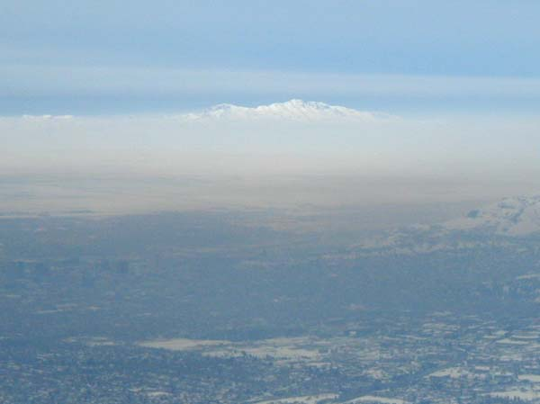

Jive Potential
The holy grail of foothill freakin, the massif which towers over
SLC, Antelope Island (as seen from Grandeur Peak).

Grandeur Peak as seen from Dale Peak ridge to the north. The north
bowl has a fabulous, wide avalanche gully that finishes in a tight
choke just above I-80 near the mouth of Parley's (seen at the bottom
of the pict).